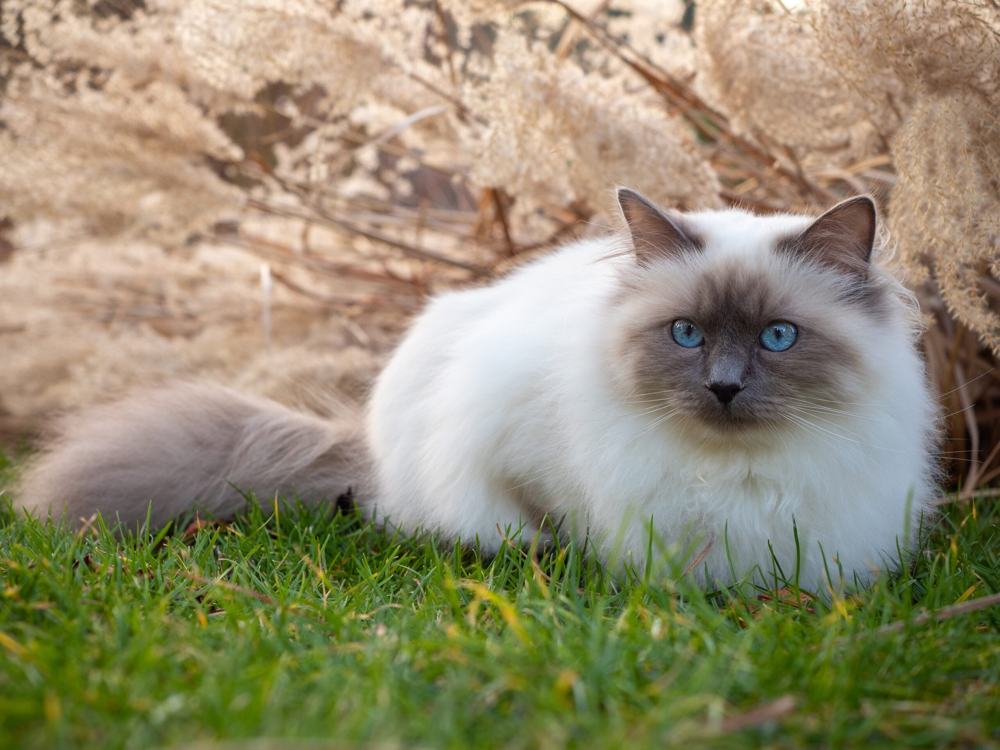
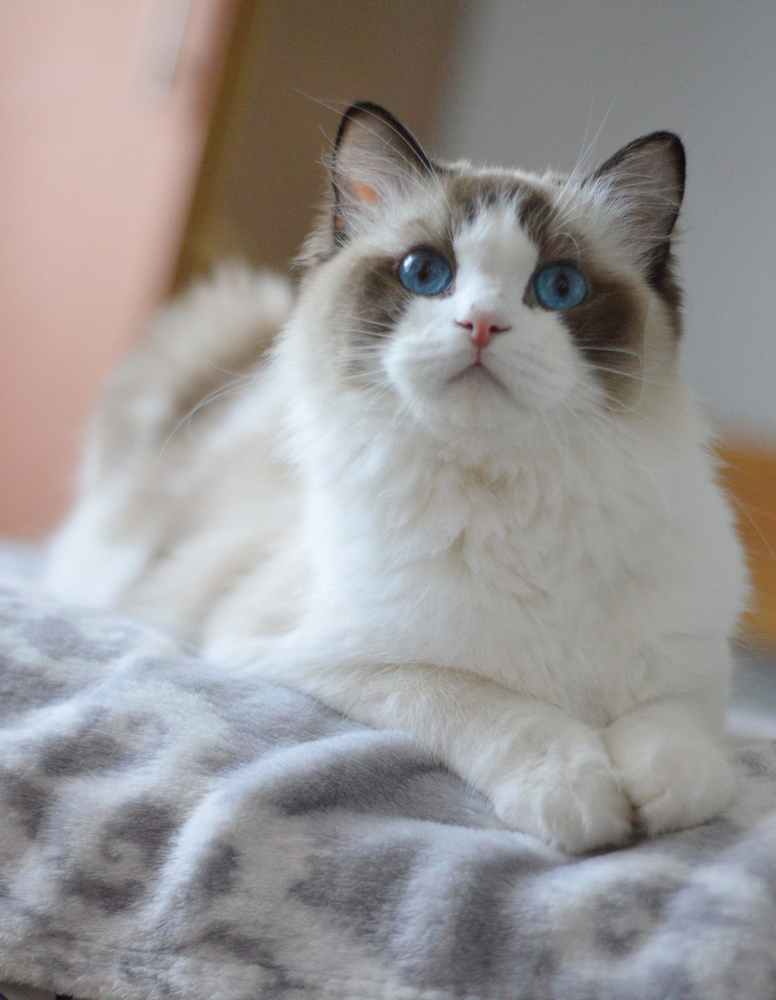

Bengali on energinen ja älykäs kissarotu, joka tunnetaan leopardimaisesta pilkullisesta tai marmoroidusta turkistaan. Se on aktiivinen ja leikkisä kissa, joka nauttii kiipeilystä, vuorovaikutuksesta ja jopa vedellä leikkimisestä.

Pyhä Birma
Pyhä birma on lempeä ja seurallinen kissarotu, joka tunnetaan sinisistä silmistään, puolipitkästä turkistaan ja valkoisista “hansikkaistaan” tassuissa. Se on rauhallinen mutta leikkisä kissa, joka viihtyy ihmisten seurassa ja sopeutuu hyvin perhe-elämään.

Ragdoll
Ragdoll on suuri ja rauhallinen kissarotu, joka tunnetaan sinisistä silmistään ja pehmeästä, puolipitkästä turkistaan. Se on erityisen lempeä ja ihmisläheinen kissa, joka usein rentoutuu sylissä aivan “räsynuken” tavoin.
Siamese
Siamese eli siamilainen on puhelias, älykäs ja hyvin ihmisläheinen kissarotu, joka tunnetaan hoikasta vartalostaan, suurista korvistaan ja sinisistä silmistään. Se on erittäin seurallinen ja kiintyy vahvasti omistajaansa, eikä viihdy pitkään yksin.